Examples#
This gallery walks through every public feature of engineeringkit.aerodynamics,
one breakthrough per script: dynamic pressure and force coefficients,
circulation lift, airfoil sections, finite wings, cruise performance,
boundary layers, compressible flow and the standard atmosphere.
Units, assumptions and numerical validation
gives the physical validity limits. Each script is self-contained and can be
run directly with python examples/aerodynamics/<section>/<script>.py.
Sections#
forces – Bernoulli’s dynamic pressure, Cayley’s lift/drag split, Lilienthal’s coefficients and the Wrights’ correction of Smeaton’s coefficient.
circulation – the Kutta-Joukowski theorem on a spinning cylinder.
airfoils – NACA four-digit sections and thin-airfoil theory.
wings – Prandtl’s lifting line, induced drag and the Oswald drag polar.
performance – the Breguet range equation.
boundary_layer – Reynolds similarity, the Blasius layer and turbulent skin friction.
compressible – sound speed, the Mach cone, stagnation states, Prandtl-Glauert, normal shocks and the de Laval nozzle.
atmosphere – the International Standard Atmosphere.
Airfoils#
NACA four-digit section geometry and thin-airfoil theory.
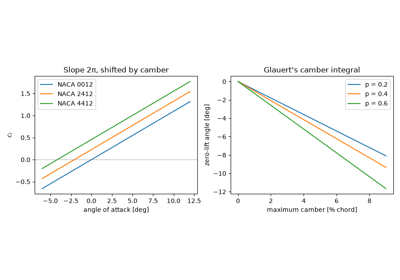
Thin-airfoil theory: lift slope 2π and the camber shift
Standard atmosphere#
Temperature, pressure and density with altitude.
Boundary layers#
Reynolds-number similarity and laminar/turbulent flat-plate friction.
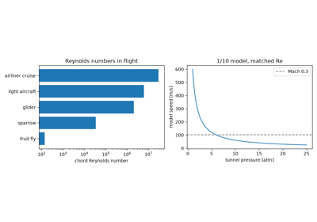
Reynolds’ dimensionless number and wind-tunnel similarity
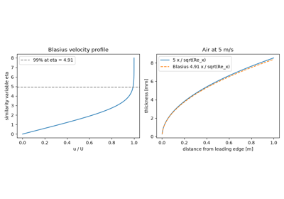
Prandtl’s boundary layer and the Blasius solution
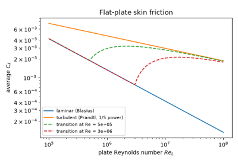
Turbulent skin friction and the one-fifth-power law
Circulation#
Lift as the product of density, speed and circulation.
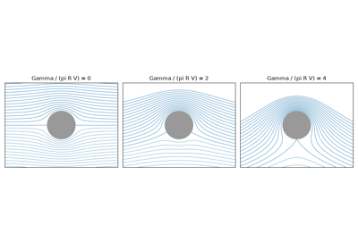
The Kutta-Joukowski theorem on a spinning cylinder
Compressible flow#
Sound speed, Mach waves, isentropic stagnation states, compressibility corrections, shocks and nozzles.
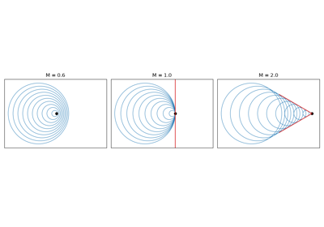
Ernst Mach’s shock photographs and the Mach cone
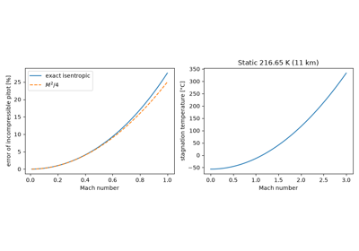
Saint-Venant and Wantzel: isentropic stagnation states
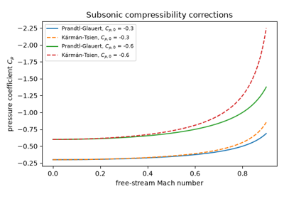
The Prandtl-Glauert compressibility correction
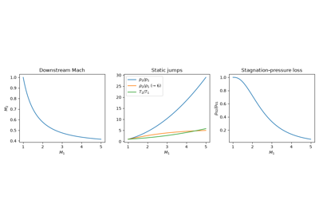
Rankine-Hugoniot jump conditions across a normal shock
Forces and coefficients#
Dynamic pressure, the lift/drag decomposition and dimensionless force coefficients.
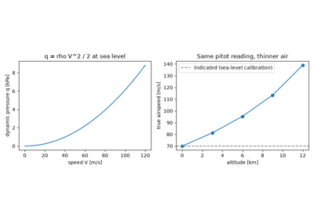
Bernoulli’s dynamic pressure and the pitot-static airspeed
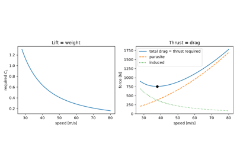
Cayley’s separation of lift and drag in level flight
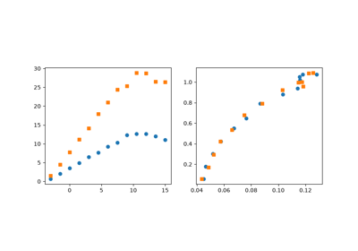
Lilienthal’s lift and drag coefficients and the polar diagram
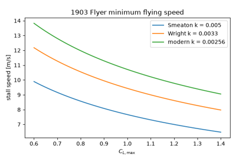
The Wright brothers, Smeaton’s coefficient and the stall speed
Performance#
Cruise range from aerodynamic efficiency and engine fuel consumption.
Finite wings#
Lifting-line theory, induced drag and the parabolic drag polar.
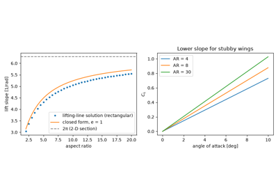
Prandtl’s lifting-line theory and the finite-wing lift slope
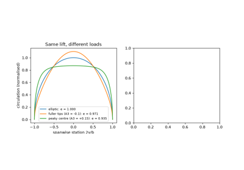
Induced drag and the optimality of elliptic loading
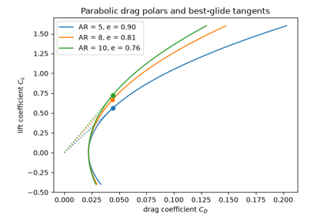
Oswald’s efficiency factor and the parabolic drag polar